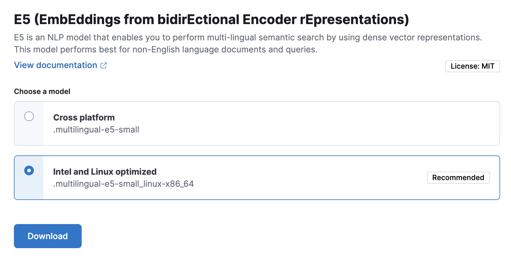
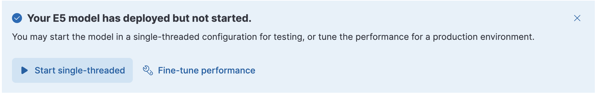

E5 – EmbEddings from bidirEctional Encoder rEpresentationsedit
EmbEddings from bidirEctional Encoder rEpresentations - or E5 - is a natural language processing model that enables you to perform multi-lingual semantic search by using dense vector representations. This model is recommended for non-English language documents and queries. If you want to perform semantic search on English language documents, use the ELSER model.
Semantic search provides you search results based on contextual meaning and user intent, rather than exact keyword matches.
E5 has two versions: one cross-platform version which runs on any hardware and one version which is optimized for Intel® silicon. The Model Management > Trained Models page shows you which version of E5 is recommended to deploy based on your cluster’s hardware.
Refer to the model cards of the multilingual-e5-small and the multilingual-e5-small-optimized models on HuggingFace for further information including licensing.
Requirementsedit
To use E5, you must have the appropriate subscription level for semantic search or the trial period activated.
Download and deploy E5edit
You can download and deploy the E5 model either from Machine Learning > Trained Models, from Search > Indices, or by using the Dev Console.
Using the Trained Models pageedit
- In Kibana, navigate to Machine Learning > Trained Models. E5 can be found in the list of trained models. There are two versions available: one portable version which runs on any hardware and one version which is optimized for Intel® silicon. You can see which model is recommended to use based on your hardware configuration.
-
Click the Add trained model button. Select the E5 model version you want to use in the opening modal window. The model that is recommended for you based on your hardware configuration is highlighted. Click Download. You can check the download status on the Notifications page.
Alternatively, click the Download model button under Actions in the trained model list.
- After the download is finished, start the deployment by clicking the Start deployment button.
-
Provide a deployment ID, select the priority, and set the number of allocations and threads per allocation values.

- Click Start.
Using the search indices UIedit
Alternatively, you can download and deploy the E5 model to an inference pipeline using the search indices UI.
- In Kibana, navigate to Search > Indices.
- Select the index from the list that has an inference pipeline in which you want to use E5.
- Navigate to the Pipelines tab.
-
Under Machine Learning Inference Pipelines, click the Deploy button in the Improve your results with E5 section to begin downloading the E5 model. This may take a few minutes depending on your network.

-
Once the model is downloaded, click the Start single-threaded button to start the model with basic configuration or select the Fine-tune performance option to navigate to the Trained Models page where you can configure the model deployment.

When your E5 model is deployed and started, it is ready to be used in a pipeline.
Using the Dev Consoleedit
- In Kibana, navigate to the Dev Console.
-
Create the E5 model configuration by running the following API call:
PUT _ml/trained_models/.multilingual-e5-small { "input": { "field_names": ["text_field"] } }The API call automatically initiates the model download if the model is not downloaded yet.
-
Deploy the model by using the start trained model deployment API with a delpoyment ID:
POST _ml/trained_models/.multilingual-e5-small/deployment/_start?deployment_id=for_search
Deploy the E5 model in an air-gapped environmentedit
If you want to install E5 in an air-gapped environment, you have the following
options:
* put the model artifacts into a directory inside the config directory on all
master-eligible nodes (for multilingual-e5-small and
multilingual-e5-small-optimized)
* install the model by using HuggingFace (for multilingual-e5-small model
only).
Model artifact filesedit
For the multilingual-e5-small model, you need the following files in your
system:
https://ml-models.elastic.co/multilingual-e5-small.metadata.json https://ml-models.elastic.co/multilingual-e5-small.pt https://ml-models.elastic.co/multilingual-e5-small.vocab.json
For the optimized version, you need the following files in your system:
https://ml-models.elastic.co/multilingual-e5-small-optimized.metadata.json https://ml-models.elastic.co/multilingual-e5-small-optimized.pt https://ml-models.elastic.co/multilingual-e5-small-optimized.vocab.json
Using file-based accessedit
For a file-based access, follow these steps:
- Download the model artifact files.
-
Put the files into a
modelssubdirectory inside theconfigdirectory of your Elasticsearch deployment. -
Point your Elasticsearch deployment to the model directory by adding the following line to the
config/elasticsearch.ymlfile:xpack.ml.model_repository: file://${path.home}/config/models/` - Repeat step 2 and step 3 on all master-eligible nodes.
- Restart the master-eligible nodes one by one.
- Navigate to the Trained Models page in Kibana, E5 can be found in the list of trained models.
- Click the Add trained model button, select the E5 model version you downloaded in step 1 and want to deploy and click Download. The selected model will be downloaded from the model directory where you put in step 2.
- After the download is finished, start the deployment by clicking the Start deployment button.
- Provide a deployment ID, select the priority, and set the number of allocations and threads per allocation values.
- Click Start.
Using the HuggingFace repositoryedit
You can install the multilingual-e5-small model in a restricted or closed
network by pointing the eland_import_hub_model script to the model’s local
files.
For an offline install, the model first needs to be cloned locally, Git and Git Large File Storage are required to be installed in your system.
-
Clone the E5 model from Hugging Face by using the model URL.
git clone https://huggingface.co/elastic/multilingual-e5-small
The command results in a local copy of the model in the
multilingual-e5-smalldirectory. -
Use the
eland_import_hub_modelscript with the--hub-model-idset to the directory of the cloned model to install it:eland_import_hub_model \ --url 'XXXX' \ --hub-model-id /PATH/TO/MODEL \ --task-type text_embedding \ --es-username elastic --es-password XXX \ --es-model-id multilingual-e5-smallIf you use the Docker image to run
eland_import_hub_modelyou must bind mount the model directory, so the container can read the files.docker run --mount type=bind,source=/PATH/TO/MODELS,destination=/models,readonly -it --rm docker.elastic.co/eland/eland \ eland_import_hub_model \ --url 'XXXX' \ --hub-model-id /models/multilingual-e5-small \ --task-type text_embedding \ --es-username elastic --es-password XXX \ --es-model-id multilingual-e5-smallOnce it’s uploaded to Elasticsearch, the model will have the ID specified by
--es-model-id. If it is not set, the model ID is derived from--hub-model-id; spaces and path delimiters are converted to double underscores__.
Disclaimeredit
Customers may add third party trained models for management in Elastic. These models are not owned by Elastic. While Elastic will support the integration with these models in the performance according to the documentation, you understand and agree that Elastic has no control over, or liability for, the third party models or the underlying training data they may utilize.